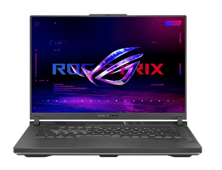
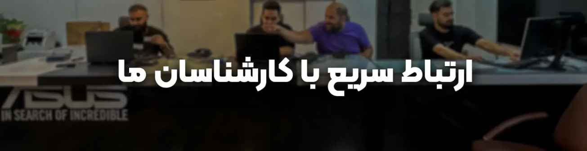

 ایسوس به عنوان فروشگاه 24 ساعته محصولات ایسوس بوده و حتی در ایام تعطیل نیز در خدمت مشتریان گرامی است تا به راحتی اقدام به تهیه محصولات ایسوس نمایند.
برای اطلاع از خدمات متنوع ایسوس و ساعت کاری ایسوس، کافی است با تلفن ایسوس به شماره 45639 تماس بگیرید. علاوه بر ارتباط تلفنی و خرید آنلاین ۲۴ ساعته، امکان مراجعه حضوری به مراکز و شعب ایسوس از شنبه تا جمعه در سراسر کشور وجود دارد.
مجموعه ایسوس در ایران با سابقهای درخشان، بیش از 15 سال سابقه و تعهد به کیفیت در زمینه فروش و خدمات پس از فروش محصولات ایسوس، همواره در کنار شما بوده تا بهترینها را به شما ارائه دهد. ما با تکیه بر دانش و تجربه متخصصان خود، تلاش میکنیم تا نیازهای شما را به درستی درک کرده و بهترین راهحلها را به شما ارائه دهیم.
در فروشگاههای فیزیکی و همچنین فروشگاه اینترنتی ایسوس در ایران، میتوانید طیف گستردهای از محصولات ایسوس را با قیمتی مناسب و گارانتیهای معتبر این مجموعه پیدا کنید. لپ تاپ ایسوس، مانیتور ایسوس، تبلت، موبایل، آل این وان و سایر محصولات الکترونیکی ایسوس، تنها بخشی از تنوع بالای محصولات ما هستند.
ما در ایسوس در ایران، به جلب رضایت شما مشتریان عزیز و کاربران محترم متعهدیم. به همین منظور، در کنار ارائه محصولات باکیفیت، خدمات پس از فروش کاملی را به شما ارائه میدهیم. کارشناسان مجرب ما در واحد خدمات پس از فروش، همواره آماده پاسخگویی به سوالات شما و ارائه خدمات مورد نیازتان مانند تعمیر لپ تاپ ایسوس هستند.